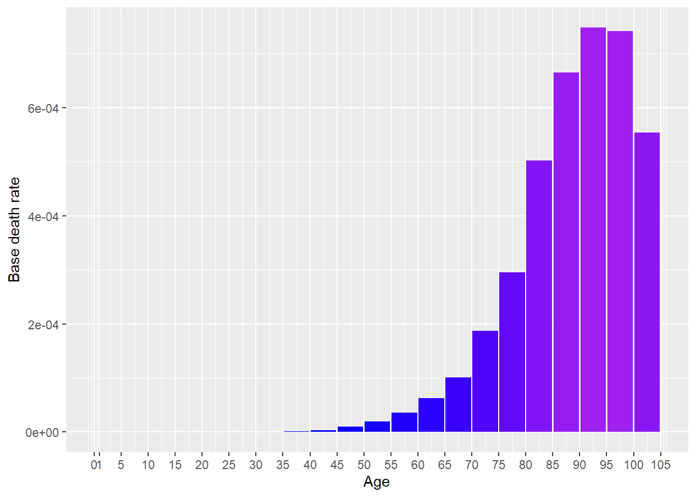
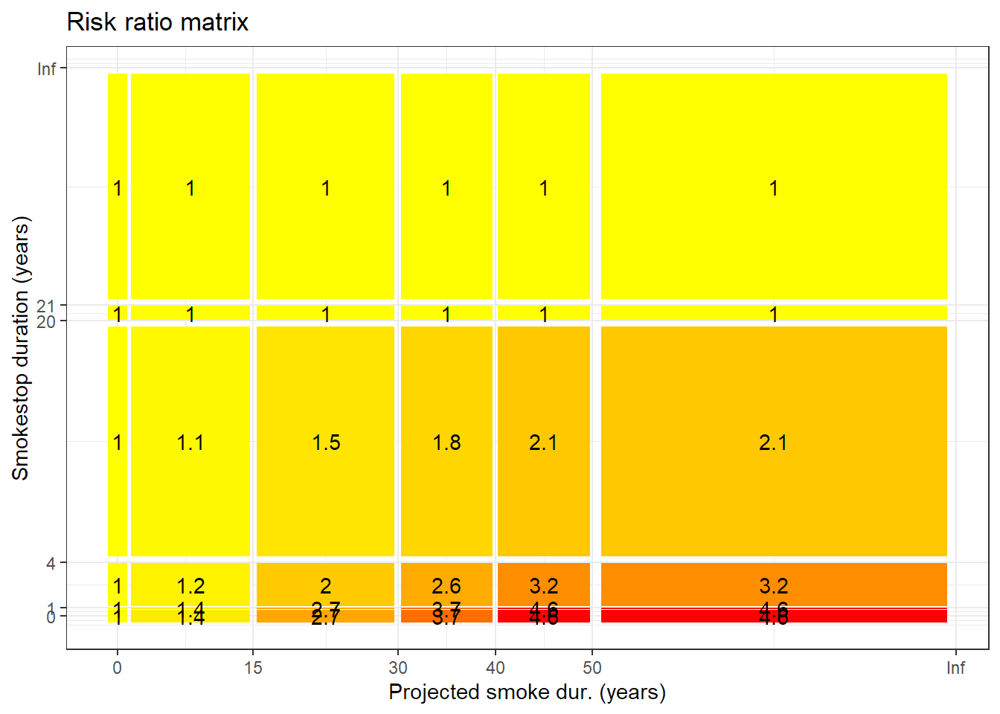

[auto-generated file]
Bladder cancer is a death cause. It means that there is a certain probability that one dies from this.
In the model Bladder cancer has the following risk factors
In 2014 Bladder cancer was responsible for 0.6% of the deaths in the US. Below is a plot of how prevalent the death was for different ages (Xu et al. 2016)

The definition of dying from Bladder cancer is to get any of the following ICD codes as the main cause of death on one’s death certificate. The percentage is the proportion of the deaths from Bladder cancer who falls under the ICD code
The combined risk ratio of all risk factors is computed using the formula
\[ RR=RR_{\text{Fluids}} \cdot RR_{\text{Smoke total}} \]
The normalization factor is based on the joint distribution of all the risk factors and is computed using the formula
\[ P=P_{\text{Fluids}} \cdot P_{\text{Smoke total}} \]
Fluids intake is a risk factor for Bladder cancer.
Below is a plot of the risk ratios we have taken from the literature alterated to fit our model
Because the variable Fluids intake is numeric, we have computed a smoothed approximation.
Total amount smoked in life is a risk factor for Bladder cancer.
Below is a plot of the risk ratios we have taken from the literature alterated to fit our model

Because the variable Total amount smoked in life is numeric, we have computed a smoothed approximation.
“ICD Order Files 2014.” n.d. https://www.cdc.gov/nchs/icd/icd10cm.htm.
Xu, Jiaquan, Kenneth D Kochanek, Sherry L Murphy, and Betzaida Tejada-Vera. 2016. “Deaths: Final Data for 2014.” National Vital Statistics Reports 65 (4).